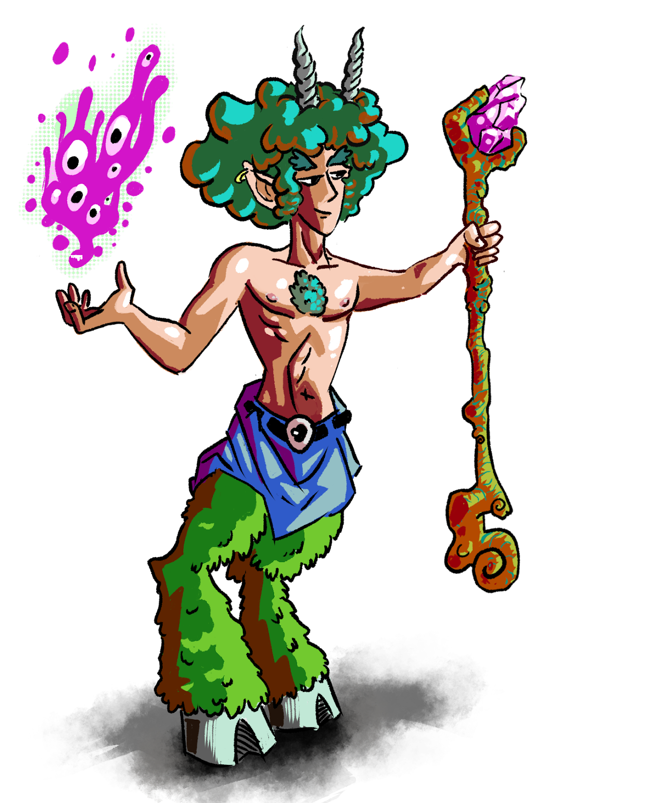

Fauns
Graceful and in tune with the natural world, Fauns embody the harmony of Terra Megalithia's wilds. With their music and art deeply woven into the magic of the land, Fauns navigate the forests and meadows with ease, serving as mediators between the untamed forces of nature and the burgeoning societies of the realm.

Size: 5 Cubic Feet
HP Maximum: 100
Energy Maximum: 10
Encumbrance Capacity: 80
Natural Defense: +1
Speed: 35 feet
Gets an Advantage Bonus on Agility rolls equal to his Small Bonus.
Fauns do not receive penalties or have a reduced movement speed for difficult, slippery surfaces, and steep terrain.